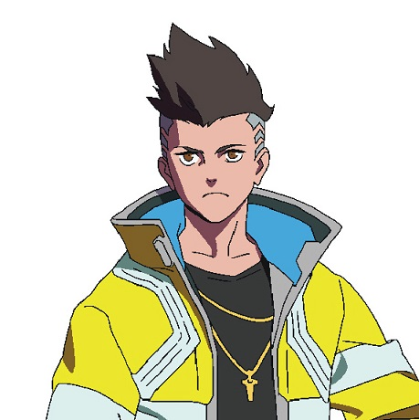
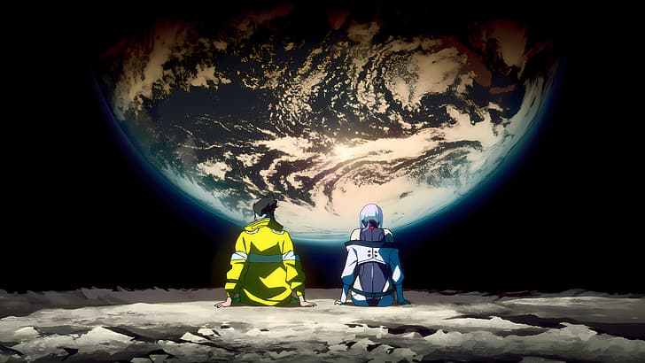
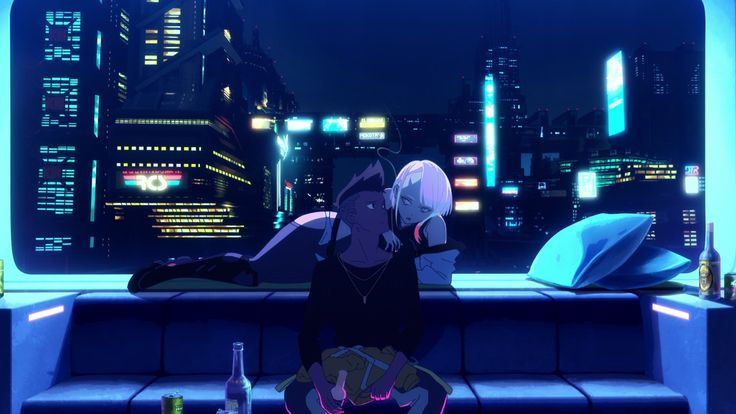
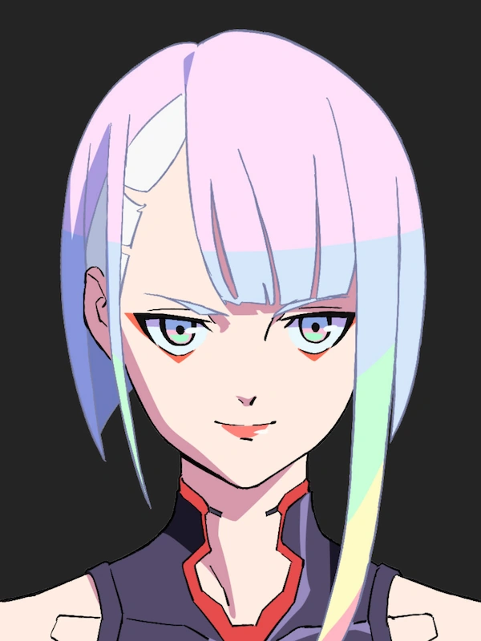
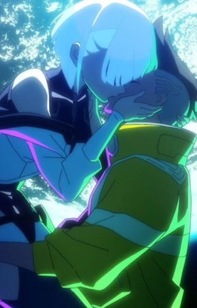

SUJETO 01
DAVID
MARTÍNEZ
EL CORREDORROL // EDGERUNNER
IMPLANTE // SANDY
ESTADO // AL LÍMITE
IMPLANTE // SANDY
ESTADO // AL LÍMITE

NETFLIX ORIGINAL ANIMATION _ 2076
En una ciudad que lo devora todo, dos almas intentan llegar más allá de las luces de neón.
Night City es una promesa bañada en cromo: si tienes suficiente dinero, puedes ser quien quieras. David Martínez sólo quería sobrevivir a ella.
Tras perderlo todo, entra en el mundo de los edgerunners —mercenarios fuera de la ley que persiguen el próximo gran golpe— y conoce a Lucy, una netrunner con un único sueño: escapar de este mundo y pisar la Luna.


SUJETO 01

SUJETO 02
DESTINO
Entre encargos, pérdidas y modificaciones, David encuentra en Lucy algo más importante que sobrevivir: una razón para seguir mirando hacia arriba.

Explora la cronología, perfiles y archivos de Night City en tiempo real.
streamlit run app.py